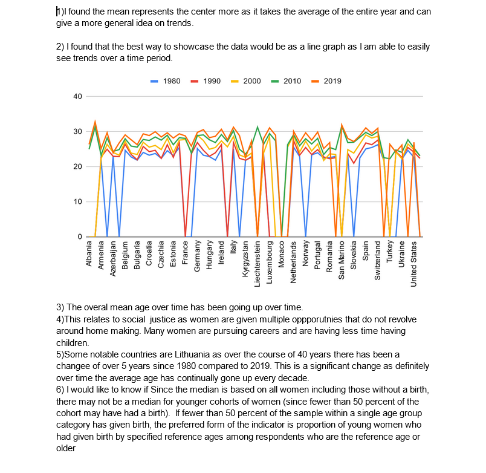

I choose this lab soely on how enjoyable it was to make it. I really enjoyed the proccess of creating an outline, looking over the data to visualize and realize trends over time. The topic also drew me as I was curious how modern factors affect women.
I enjoy this lab because of the importance of the data and how it affects our normal lives. The results can be seen in the data and has given me a better understanding distribution and analyzing data. This lab gave me more confidence for future labs and even future projects that revolve around data. I have become more comfortable with taking data and analyzing it in order to create a solution.